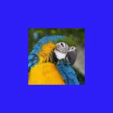

Effen matte

Zet een effen kleur achter de laag en vult zo de transparante delen. Uitsparen toont alleen de kleur met de vorm van de laag eruit gesneden, en Schermruimte vult het hele scherm in plaats van het kader van de laag.
Instellingen
| Instelling | Type | Bereik | Standaard |
|---|---|---|---|
| Kleur | Kleur | – | #2D1EF6 |
| Alfa | Getal | 0% tot 100% | 100% |
| Uitsparen | Aan of uit | – | Uit |
| Schermruimte | Aan of uit | – | Uit |